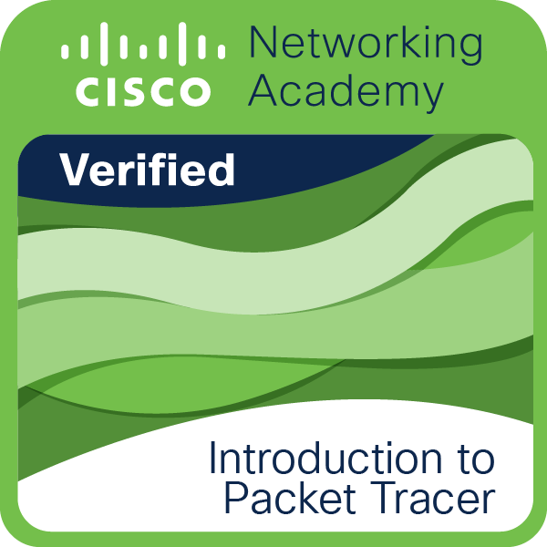

Tienda de galletas
Servicio backend con seguridad optimisada.
Disponible para proyectos y prácticas
Soy
Universidad Politécnica de Chiapas
Estudiante especializado en desarrollo de software, enfocado en construir aplicaciones eficientes, mi es pecialidad backend .
Sobre mí
“Si lo puedes imaginar, lo puedes crear.”
Me enfoco en backend, escribir código limpio y arquitecturas.
Actualmente estudio Ingeniería en Sistemas en la Universidad Politécnica de Chiapas.
Universidad Politécnica de Chiapas
Ingeniería en Tecnologías de la Información e Innovación Digital (cursando si se llega a terminar)
Código limpio y solociones practicas
Nuevas herramientas y Tecnologías
Universidad Politécnica de Chiapas
Redes y simulación de infraestructura.
Fundamentos de Python
Introduccion al desarrollador wed
Fundamentos de computación en la nube.
Proyectos
Servicio backend con seguridad optimisada.
Herramienta interactiva para visualización de métricas estadísticas e interpretación de datos.
Interfaz nativa fluida. Enfocada en la Universidad
especialidades
Logros,si se Puede llamar asi

2025
2025